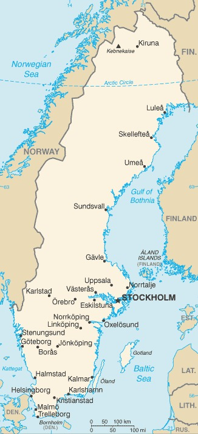

Genel Bilgiler
İsveç, Kuzey Avrupa’da yer alan bir parlamenter monarşi ile yönetilen ülkedir. Başkenti Stockholm’dür. Yaklaşık 10,5 milyon nüfusa sahiptir. Resmî dili İsveççe’dir ve para birimi İsveç Kronu (SEK)’dur. İsveç, Avrupa Birliği üyesi olmasına rağmen Euro kullanmamaktadır ve sosyal refah sistemi ile yüksek yaşam standartları ile tanınır.
İsveç, kuzeyde Norveç, doğuda Finlandiya ve Baltık Denizi, güneyde Danimarka Boğazı ile çevrilidir. Yüzölçümü yaklaşık 450.295 km²’dir. Ülke coğrafyası kuzeyde dağlık ve ormanlık, güneyde ise düzlük alanlardan oluşur. Önemli nehirleri arasında Göta, Klarälven ve Dalälven bulunur.
Başkent: Stockholm
Kıta: Avrupa
Yüzölçümü: 450.295 km²
Nüfus (2025): 10.500.000
Bayrak Anlamı: İsveç bayrağı mavi zemin üzerinde sarı bir İskandinav haçından oluşur. Sarı haç Hristiyanlığı temsil ederken, mavi zemin gökyüzü ve suyu simgeler. Bayrak 16. yüzyıldan beri kullanılır ve İsveç’in ulusal sembolüdür.
İsveç Haritası
Ekonomi
İsveç ekonomisi yüksek gelirli ve gelişmiş bir yapıya sahiptir. Sanayi, hizmetler ve teknoloji sektörleri ekonominin temelini oluşturur. Sanayi alanında otomotiv, telekomünikasyon, enerji ve makine üretimi öne çıkar. Tarım sektörü küçük ölçeklidir; süt, et ve tahıl üretimi yaygındır. İsveç, inovasyon, Ar-Ge ve yeşil enerji alanlarında öncü ülkeler arasında yer alır.
| Yıl | İhracat (Milyar $) | İthalat (Milyar $) |
|---|---|---|
| 2019 | 162 | 152 |
| 2020 | 150 | 140 |
| 2021 | 170 | 160 |
| 2022 | 175 | 165 |
| 2023 | 178 | 168 |